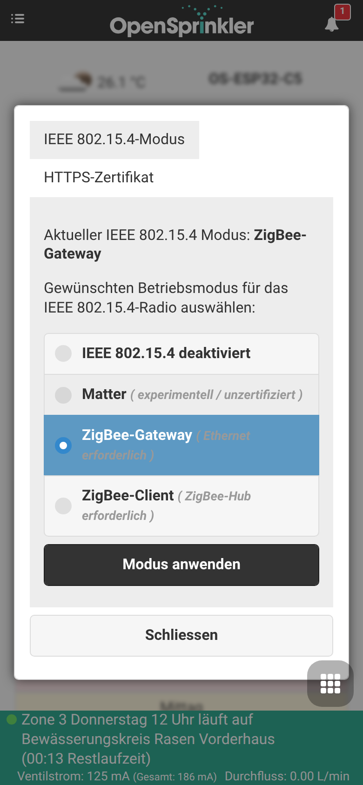
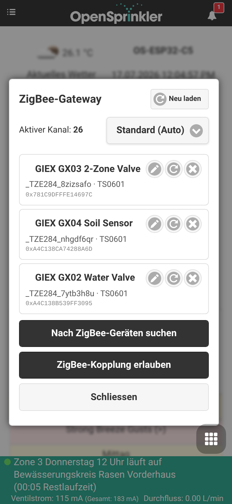
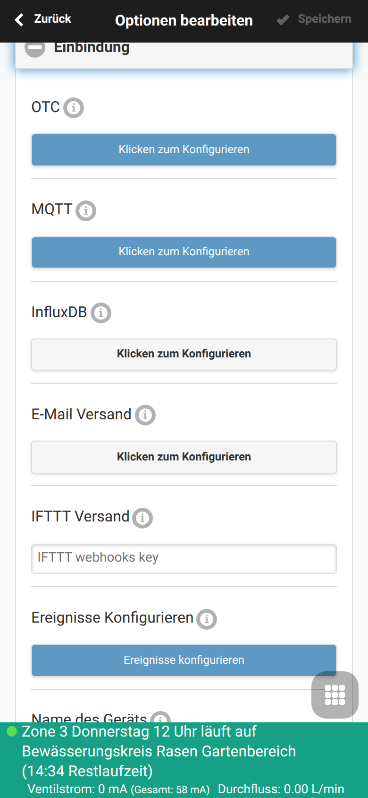
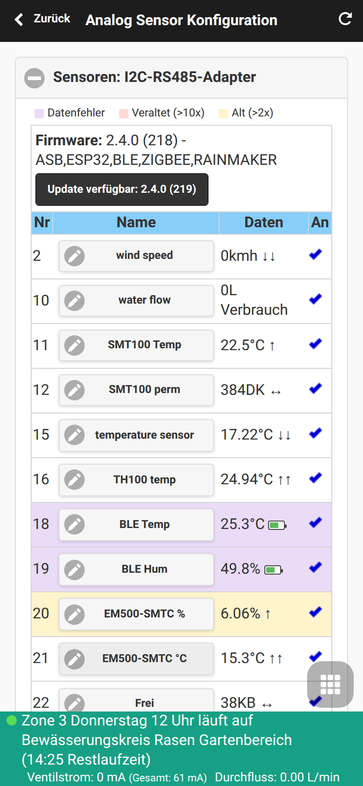
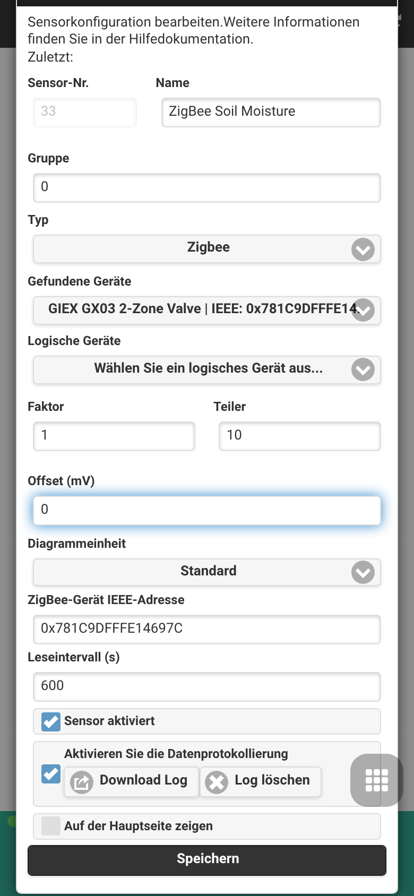
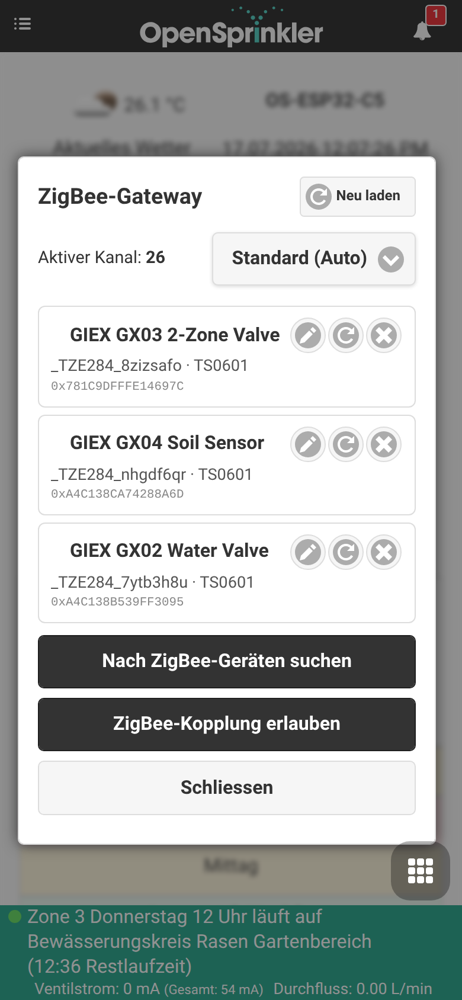
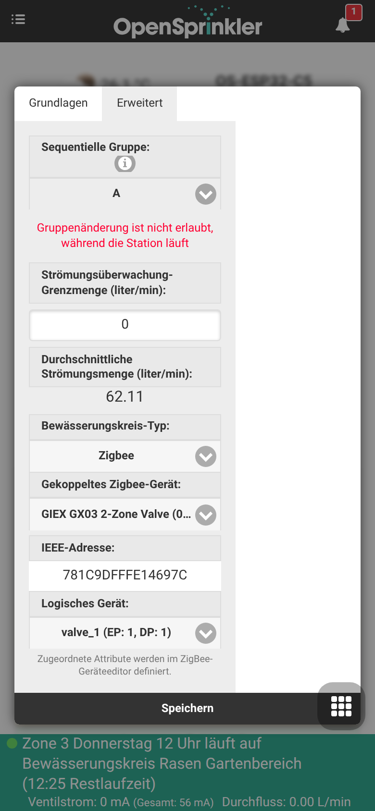

Zigbee-Gateway-Integration
OpenSprinklerPro bietet native Zigbee-Koordinierungsfunktionen direkt auf dem ESP32-C5-Board. Die Ein-Chip-Lösung des ESP32-C5 unterstützt 2,4 GHz Dual-Band Wi-Fi 6, Bluetooth 5 (LE) und 802.15.4 (Zigbee 3.0 / Thread).
Mit der Zigbee-Variante der Firmware fungiert Ihr OpenSprinkler-Controller als vollwertiger Zigbee-Koordinator. Er kann mit Hausautomationssensoren, intelligenten Ventilen, Bodenfeuchtesensoren und Temperaturwächtern gekoppelt werden, um Ihre Bewässerungspläne basierend auf lokalen Echtzeitbedingungen anzupassen.
📸 Geführter Einrichtungs-Workflow
Diese Schritt-für-Schritt-Anleitung zeigt, wie Sie den Funkmodus konfigurieren, Zigbee-Geräte koppeln und deren Attribute analogen Sensoren zuweisen.
Schritt 1: Konfiguration des Funkmodus
Stellen Sie zunächst sicher, dass Ihr ESP32-C5-Controller auf den richtigen Funkmodus eingestellt ist. Standardmäßig kann der ESP32-C5 in verschiedenen Modi betrieben werden. Rufen Sie die Modus-Einstellungen über das Seitenmenü unter Setup ESP32 Mode auf.

Um Zigbee zu nutzen, aktivieren Sie den Modus Zigbee Gateway / Coordinator. Dadurch wird das native 802.15.4-Funkmodul für das Zigbee-Kanalmanagement, das Geräte-Routing und den Netzwerkaufbau initialisiert.
Schritt 2: Geräte verbinden & koppeln
Sobald der Zigbee-Modus aktiv ist, können Sie über das Seitenmenü auf die Seite ZigBee Gateway zugreifen. Auf dieser Seite steuern Sie das Kopplungsfenster und verwalten registrierte physische Geräte.

- Klicken Sie auf Permit Join (Verbinden erlauben, normalerweise für 60 Sekunden), um das Netzwerk für neue Geräte zu öffnen.
- Versetzen Sie Ihr Zigbee-Gerät (z. B. GIEX-Bewässerungsventil, Tuya-Bodensensor oder Xiaomi-Temperatursensor) in den Kopplungsmodus (meist durch Drücken der Kopplungstaste für 5 Sekunden).
- Das Gerät wird erkannt, erhält eine Kurzadresse und wird mit seiner 64-Bit-IEEE-Adresse, dem Gerätetyp und der Signalqualität (LQI) aufgelistet.
Schritt 3 (optional): Externe Integrationen
Dieser Schritt ist optional und für den Betrieb von Zigbee-Stationen oder -Sensoren nicht erforderlich. Öffnen Sie Optionen bearbeiten → Integrationen (Integrations) nur dann, wenn Sie Ihre Daten an externe Systeme weitergeben möchten: Sensorwerte und Ventilzustände per MQTT veröffentlichen, in InfluxDB protokollieren, den Cloud-Fernzugriff über OpenThings Cloud (OTC) aktivieren oder E-Mail-/IFTTT-Benachrichtigungen für Controller-Ereignisse senden.

Schritt 4: Multi-Sensor- und Kalibrierungskonfiguration
Um die Sensordaten für Programmanpassungen zu verwenden, wechseln Sie über das Fußzeilenmenü zu Analoge Sensoren (Analog Sensor Configuration). Diese Übersicht zeigt alle aktiven logischen Sensoren, deren physikalische Bindung sowie den Batteriestatus.

Schritt 5: Hinzufügen/Bearbeiten eines Zigbee-Sensors
Klicken Sie auf Sensor hinzufügen (Add Sensor) oder bearbeiten Sie einen vorhandenen Sensor, um ein bestimmtes Attribut des Zigbee-Geräts (wie Bodenfeuchtigkeit in Prozent oder Temperatur) einem analogen Sensor-Steckplatz zuzuweisen.

In diesem Editor können Sie: - Dem Sensor einen leicht erkennbaren Namen geben. - Den Sensortyp auswählen (z. B. Feuchtigkeit, Temperatur, Batterie usw.). - Das Quellgerät (Source Device) aus der Dropdown-Liste der gekoppelten Zigbee-Knoten auswählen. - Eigene Kalibrierungs-Offsets sowie Schwellenwerte für Auslöser festlegen.
💧 GIEX-Smart-Ventile & Zonensteuerung
Über das reine Auslesen von Sensoren hinaus kann OpenSprinklerPro batteriebetriebene GIEX-Zigbee-Ventile direkt als Bewässerungszonen (Stationen) ansteuern. Jeder Ventilausgang wird einer Station zugeordnet und vom Controller drahtlos geöffnet und geschlossen — ganz ohne 24-V-Verkabelung, Magnetventile oder Ventilboxen.
Was diese Ventile besonders macht
- Kabellos & batteriebetrieben – das Ventil läuft mit internen Batterien und kommuniziert über Zigbee, sodass eine Zone überall in Reichweite des Koordinators platziert werden kann.
- Tuya-Smart-Ventil-Plattform – GIEX-Ventile stellen ihre Funktionen als Tuya-Datenpunkte (DPs) bereit: Ein/Aus-Steuerung, Countdown-Timer, zyklische bzw. dauerbasierte Bewässerung und – bei Modellen mit Zähler – Durchfluss- und Mengentelemetrie.
- Mehrere Zonen in einem Gerät – ein einzelnes GX03 bietet zwei völlig unabhängige Ausgänge, sodass ein einziges gekoppeltes Gerät zwei separate OpenSprinkler-Zonen ergibt.
- Batteriestatus – der verbleibende Batterieladestand wird direkt auf der Stationskarte im Dashboard angezeigt.
Die GIEX-Produktfamilie
| Modell | Typ | Ausgänge / logische Geräte | Typische Verwendung |
|---|---|---|---|
| GX02 | Einzelnes Smart-Wasserventil | 1 Ventil (valve_1, DP 1) |
Eine drahtlose Bewässerungszone |
| GX03 | 2-Zonen-Smart-Wasserventil | 2 Ventile (valve_1 = DP 1, valve_2 = DP 2) |
Zwei unabhängige drahtlose Zonen aus einem Gerät |
| GX04 | Bodenfeuchte- & Temperatursensor | Bodenfeuchte + Temperatur | Feuchtebasierte Programmanpassungen (als analoger Sensor genutzt, siehe Schritt 5 oben) |
Nach der Kopplung werden alle diese Geräte gemeinsam auf der Seite ZigBee Gateway mit ihrem Anzeigenamen, Hersteller/Modell und ihrer 64-Bit-IEEE-Adresse aufgelistet:

Wie sie mit OpenSprinkler zusammenarbeiten
Wird ein Ventil als Zigbee-Station verwendet, fungiert der Controller als Zigbee-Koordinator und übersetzt jeden Stationslauf in einen Ein/Aus- (oder Tuya-DP-) Befehl an den richtigen Ventilausgang:
- Ein gekoppeltes Gerät wird über seine 64-Bit-IEEE-Adresse identifiziert.
- Ein logisches Gerät wählt den einzelnen Ausgang innerhalb dieses Geräts – z. B.
valve_1 (EP: 1, DP: 1)odervalve_2 (EP: 1, DP: 2)für die beiden Zonen eines GX03. - Beim Start der Station wird das Ventil geöffnet; Laufzeit, Programmpläne, sequentielle Gruppen, Regen-/Sensorverzögerungen und die manuelle Steuerung verhalten sich exakt wie bei einer verdrahteten Zone.
Dies unterscheidet sich von der Sensor-Zuweisung in Schritt 5: Ein Sensor liest Daten für Programmanpassungen, während eine Zigbee-Station ein Ventil aktiv steuert.
Ein GIEX-Ventil als Zone einrichten
- Koppeln Sie das Ventil auf der Seite ZigBee Gateway (siehe Schritt 2 oben). Das GIEX-Gerät erscheint mit seinem Anzeigenamen und seiner IEEE-Adresse.
- Öffnen Sie im Dashboard die Stationseinstellungen (Zahnrad-Symbol auf der Zonenkarte) und wechseln Sie zum Reiter Erweitert.
- Setzen Sie den Bewässerungskreis-Typ (Station Type) auf Zigbee.
- Wählen Sie das gekoppelte Zigbee-Gerät (z. B. GIEX GX03 2-Zone Valve). Die IEEE-Adresse wird automatisch ausgefüllt.
- Wählen Sie das logische Gerät für den Ausgang, den diese Station steuern soll –
valve_1für die erste Zone,valve_2für die zweite.

- Klicken Sie auf Speichern (Submit). Die Station öffnet und schließt nun bei jedem Lauf den ausgewählten GIEX-Ventilausgang drahtlos.
Für ein Zweizonen-GX03 wiederholen Sie die Schritte für eine zweite Station und wählen dort valve_2, damit beide Ausgänge unabhängig gesteuert werden.
Plattform-Verfügbarkeit
Zigbee-Stationen und die GIEX-Zonenfunktion erfordern den ESP32-C5-Controller mit der Zigbee-Firmware-Variante. Auf ESP8266- oder OSPi-Builds sind sie nicht verfügbar.
🛠️ Unterstützte Geräte und technische Details
Die interne Firmware unterstützt standardmäßige Zigbee 3.0-Cluster: - 0x0402: Temperaturmessung (Tuya, Xiaomi, Sonoff) - 0x0405: Relative Luftfeuchtigkeit / Bodenfeuchtigkeit (GIEX, Tuya, Moes) - 0x0001: Stromversorgungskonfiguration (Batteriestatus-Berichte)
Multi-Kanal-Gerätezuordnung
Bei Verwendung komplexer mehrkanaliger Ventile (wie dem GIEX GX02 Zweiwege-Beweässerungsventil) teilt der Koordinator die einzelnen Ventilzustände und Telemetriekanäle in separate logische Untergeräte auf. So kann jede Zone vollkommen unabhängig gesteuert und skaliert werden.
Koexistenz der Funkmodule (Coexistence)
Der ESP32-C5 verwaltet BLE-Scans, Wi-Fi 6 und Zigbee 802.15.4-Pakete gleichzeitig. Während eines BLE-Sensor-Scans senkt das Zigbee Packet Traffic Arbitration (PTA)-Protokoll vorübergehend die Priorität der Zigbee-Endpunkte, um Kollisionen in der Luft und Paketverluste zu vermeiden, und stellt sie sofort wieder her, sobald der aktive Scan pausiert.